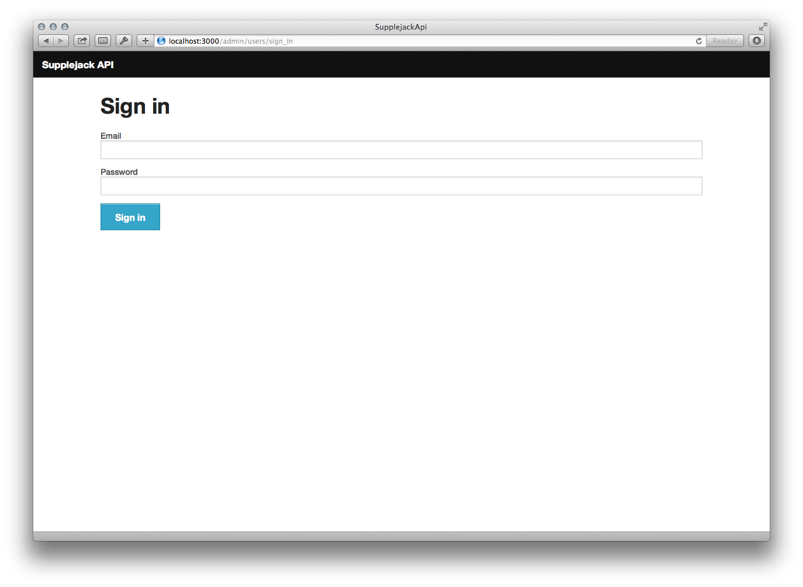

API Admin
Supplejack API comes with an admin page that lets you do the following:
- Track users activities.
- Track API usage by date.
- Update users' Max Requests value.
- Export data to CSV.
Accessing API Admin
After running your Supplejack API instance, visit localhost:3000/admin/users/sign_in. If you build your API instance using installation template, you'll be given a default admin user with the following credentials:
email: test@example.compassword: supplejack
Otherwise, you can create your own user by accessing the console.
> SupplejackApi::User.create(email: 'your@email.com', name: 'Your name', username: 'yourusername', role: 'admin', password: 'supplejack', password_confirmation: 'supplejack')
